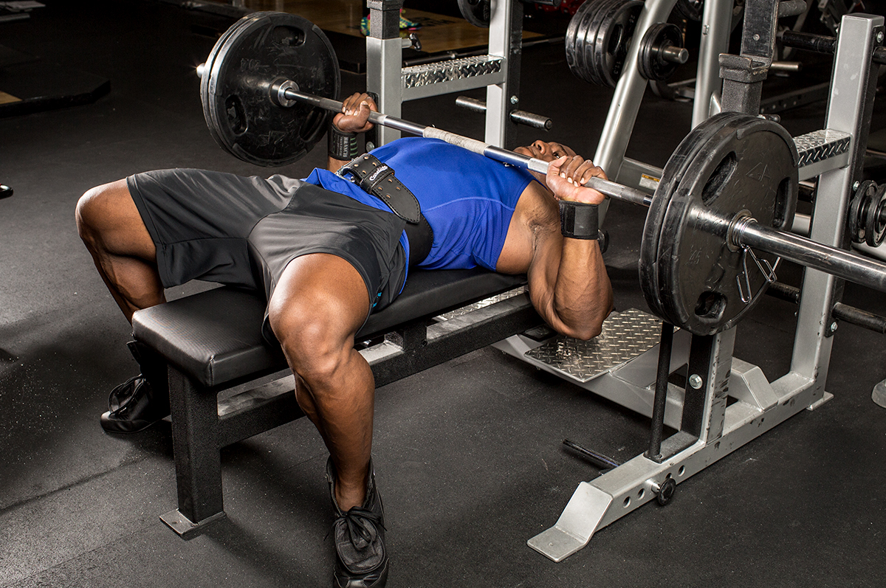
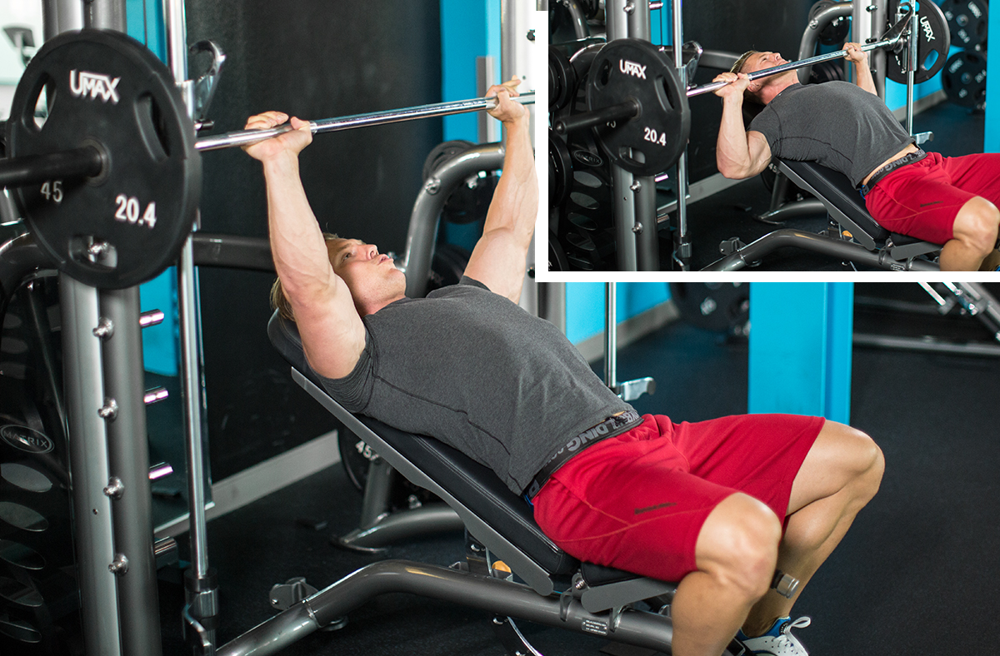
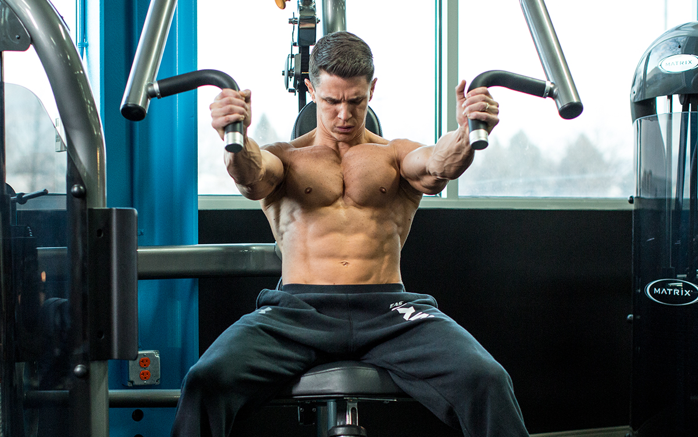
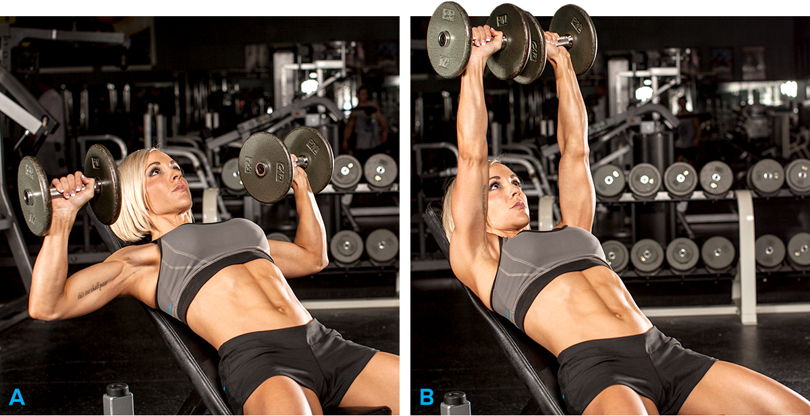
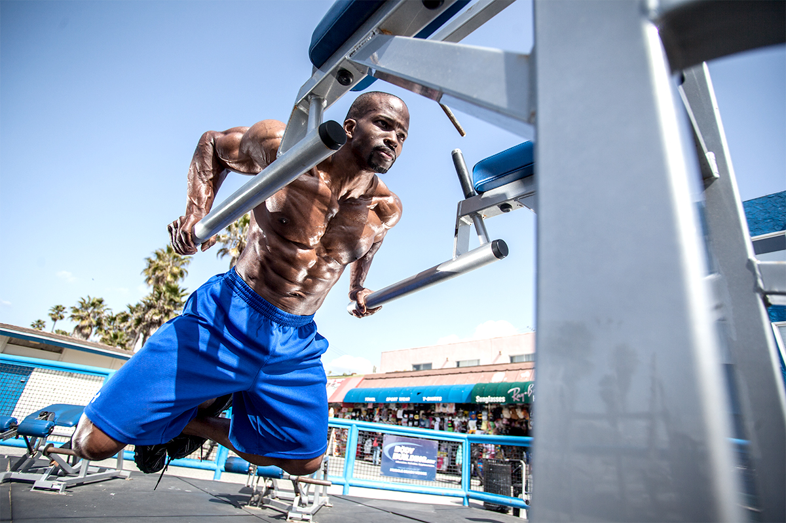
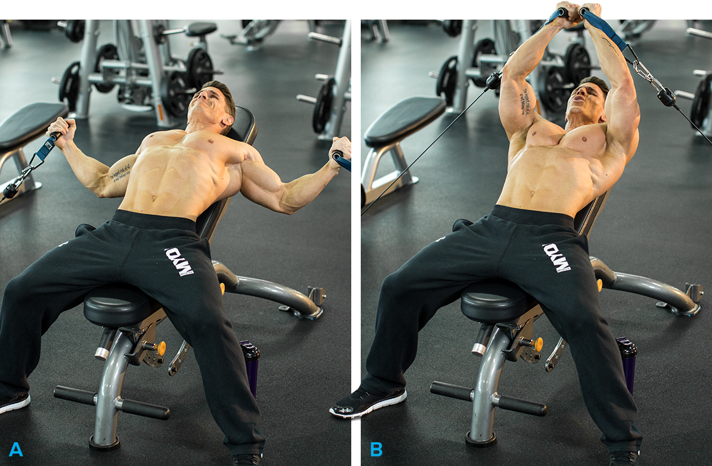
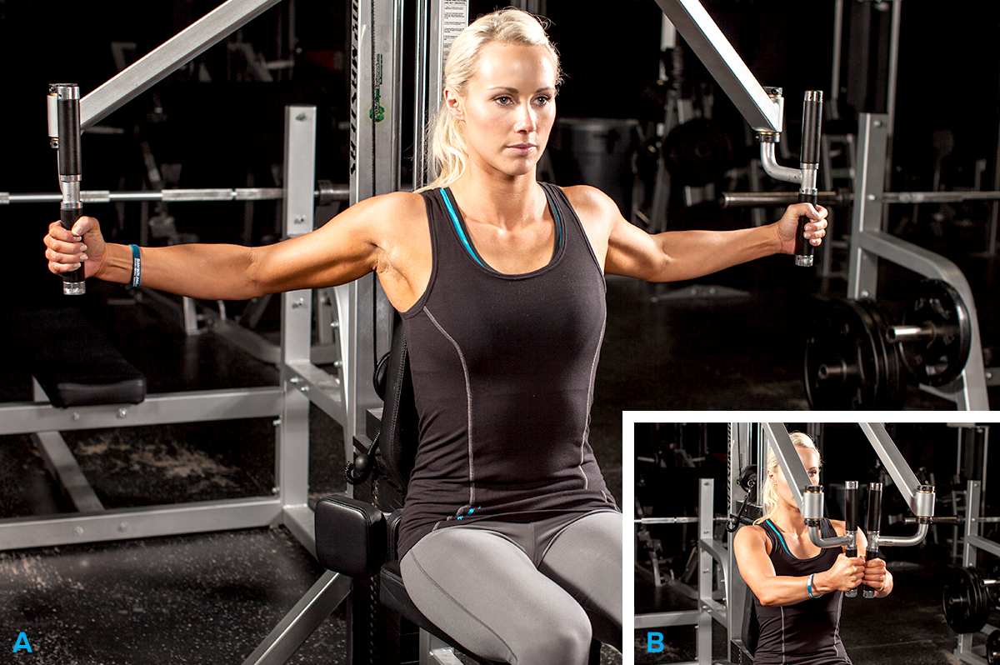

10 Best Chest Exercises For Building Muscle
1. Barbell Bench Press
Why it's on the list: You can generate the most power with barbell lifts, so the standard barbell bench allows you to move the most weight. It's also an easier lift to control than pressing with heavy dumbbells. The exercise is easy to spot and relatively easy to learn (if not master), There are plenty of bench-press programs you can follow to increase your strength. In your workout: Do it toward the start of your chest workout for heavy sets in lower rep ranges. Consider varying your grip width for more complete chest development. 
2. Flat Bench Dumbbell Press
Why it's on the list: With dumbbells, each side of your body must work independently, which recruits more stabilizer muscles; dumbbells are harder to control than a barbell. Dumbbells also allow for a longer range of motion than the barbell bench press, both at the bottom and top of the movement. Flat dumbbell presses allow you to hoist a fairly heavy weight, and they make for a good alternative if you've been stuck on the barbell bench for ages. In your workout: Do flat dumbbell presses toward the start of your chest workout for heavy sets in lower rep ranges. We don't typically recommend doing dumbbell presses in addition to the barbell bench press, because both moves are so similar. In fact, the similar nature of these movements was confirmed via electromyography (EMG) analysis, which demonstrated no significant differences between flat-bench dumbbell and barbell in regard to muscle activation.[1] 
3. Low-Incline Barbell Bench Press
Why it's on the list: Many benches are fixed at a very steep angle, which requires a larger contribution from the front delts than the chest to move the weight.[2] If possible, go for a less-steep incline to hit the upper pecs without as much stress on the delts. You can also easily do low-incline benches with an adjustable bench on the Smith machine. If you're really looking to build that shelf of an upper chest, EMG results have suggested that bringing your grip in a bit closer may hammer upper-chest fibers significantly more.[2] In your workout: Many chest workouts start with flat-bench movements first, then progress to inclines, but it's time to get out of that bad habit. Every so often, start with inclines. The benefit is that you'll be fresher and can lift more weight, which puts a greater amount of stress on the upper pec fibers and could lead to more growth.
4. Machine Decline Press
Why it's on the list: Some machines, like Hammer Strength, allow you to move each arm independently, which is a great feature on chest day. Besides doing a machine decline press straight on, you can sit sideways on the apparatus and press across your body one arm at a time, which delivers a completely different feel than when you sit straight-on. One of the primary muscle actions of the pec major is transverse adduction—think cable flyes or pec-deck flyes to understand this action. By sitting in a sideways position, you can maximize your press with a pec-dominant horizontal adduction, effectively getting more from the movement. In your workout: Do free-weight exercises first in your chest workout because they require more effort and stabilizer muscles than machines. With that in mind, this could be the last multijoint exercise in your routine.
5. Seated Machine Chest Press
Why it's on the list: Free-weight pressing moves on a flat bench are great, but the machine press has some unique benefits. For one, it's easier to slow down the repetition, both in the concentric and eccentric phases. Stack-loaded machines are also great for quickly doing dropsets. EMG research demonstrates that the machine bench press recruits much less of the three heads of the deltoid (anterior, middle, and posterior) than free-weight variations because of a decreased need for humeral stabilization.[3] This allows you to really target your pecs. In your workout: Again, do machine exercises at the end of your workout. For anyone looking to build mass, machines give you a greater chance to pump your pecs with minimal shoulder assistance. 
6. Incline Dumbbell Press
Why it's on the list: Dumbbell presses make everybody's top 10 list, but with an adjustable bench you can do a number of things you can't with a fixed bench. Our favorite: changing the angle of the incline from one set to the next, or from one workout to the next. Hitting a muscle from varying degrees of incline angles builds it more thoroughly. In your workout: This is an occasional first movement, but it can easily go anywhere from first to third in your routine. Keep in mind, though, that the later you do this movement, the less weight you'll likely be able to push. 
7. Dips For Chest
Why it's on the list: First off, make sure you're doing dips that emphasize the pecs: Put your feet up behind you, lean forward as far as possible, and allow your elbows to flare out as you dip. Chest dips are a great spotter-free alternative to the decline press. In your workout: If you're strong, this lower-chest move makes a great finisher; if you're not, you can do it earlier in your session. It makes a great superset pairing with push-ups for a big pump at the end of your workout. 
8. Incline Bench Cable Fly
Why it's on the list: Not many single-joint exercises made the list, but this is one of our favorites. It's an effective move to isolate the pecs after completing your multijoint exercises. Cables allow for continuous tension throughout the exercise's full range of motion. If you've got a good chest pump going, nothing beats looking back at yourself in the mirror as you squeeze out a few more reps. In your workout: Do incline cable flyes at the end of your workout for slightly higher reps (sets of 10-12). If you're training with a partner, do a few dropsets for some real masochistic, muscle-building fun!  p>9. Incline Dumbbell Pull-Over
Why it's on the list: Forget flat-bench pull-overs; the incline version puts your chest fibers under tension for a longer range of motion! Just sit back against a bench inclined to about 45 degrees and make sure the dumbbell clears the top. Make sure you keep this a single-joint movement; don't bend or extend at the elbows. Remember, you should have a specific reason for each movement you complete. Pull-over exercises work the shoulder-extension movement pattern (moving the upper arm rearward), which can really torch the pecs since they're one of the primary muscle groups involved in this action! In your workout: Do pull-overs at the very end of your workout for sets of 12. On every set, hold the peak contraction of the last rep for a full five seconds.
10. Peck-Deck Machine
Why it's on the list: Chest flyes are hard for many trainees to learn with dumbbells or cables because the arms need to be locked in a slightly bent position for the duration of the exercise. Luckily, the pec deck simplifies things because it allows you to work in only one pathway. So, this exercise is a great movement teacher, and you can go for a great pump without having to balance any weights. EMG data shows that activation of the pectoralis major and anterior delt are statistically similar between the pec deck and bench press, which means that even though you'll probably be working in different rep ranges for each exercise, you'll get great chest activation from this machine.[4] In your workout: Hit the pec deck last in your chest routine for sets of 10-12. Do dropsets and partial reps, pumping out as many as you can to failure. 